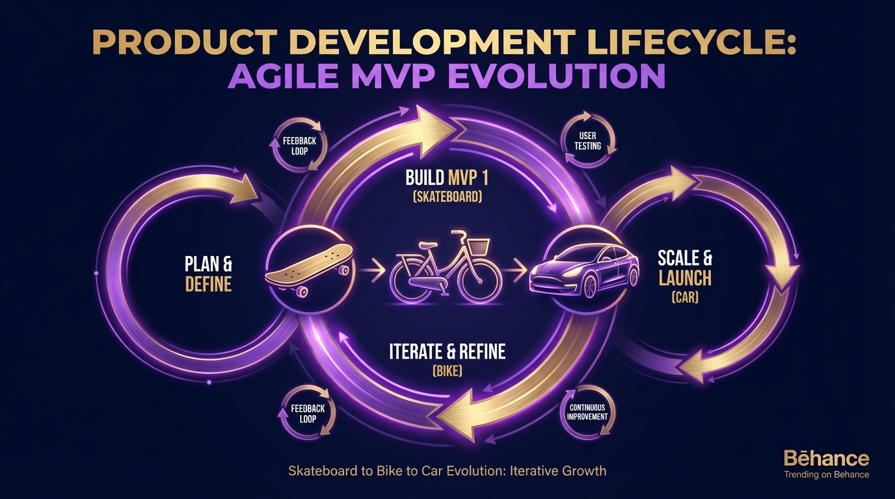
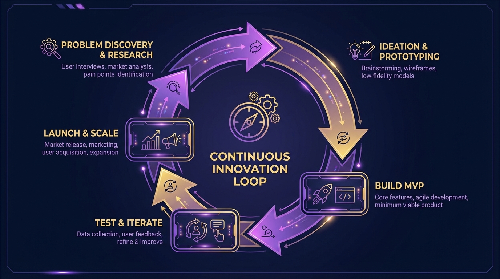
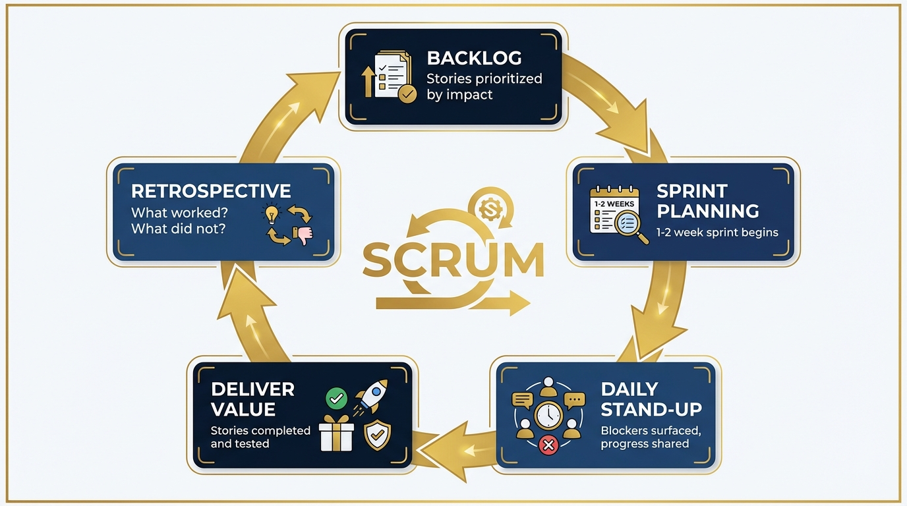

Workbook 4: The Product Dimension
Class2Career: The Business Communication Toolkit
By Ignis Spindler, PhD
This is the favorite part. Out of all four dimensions of business covered in this series, product is the one that took the longest to understand, the most resistance to accept, and produces the most return once it clicks.
The resistance is predictable. The vocabulary of product sounds like dressed-up common sense. Value proposition. User stories. Market fit. Minimum viable product. To someone coming from research, where language is precise and carefully earned, the looseness of product vocabulary feels like intellectual slippage. It can feel like people describing obvious things in unnecessarily complicated ways.
That feeling is worth sitting with, because it is wrong.
Product is not a vocabulary. It is a lens. It is a communication framework for getting the right work done with the right people in the right sequence. Once that lens is active, you start applying it to everything: your deliverables, your conversations with colleagues, the way you scope a project before you start it. It makes you more efficient, more trusted, and more effective in nearly every dimension of contribution.
This workbook covers three interlinked ideas: what product is, how value propositions and market fit work, and how Agile is the system that keeps product development moving forward. By the end, you should be able to walk into any business conversation and understand the framework within which people are making product decisions, why they prioritize what they prioritize, and how your work fits into that flow.
Part 1: What Is Product?
A Verb Wearing a Noun's Clothes
The word "product" in everyday English refers to a thing. In business, and particularly in software and technology companies, product refers to a discipline, a mindset, a process. It is closer to a verb than a noun. Thinking in product means thinking continuously about what value something delivers to the person using it, whether that something is a piece of software, a physical object, a service, or even a conversation.
The essential mission of product, stated as simply as possible, is to define a value proposition to a market. What is the thing your company does that other people will pay for? And how does every decision your company makes connect back to making that thing better, clearer, or more accessible?
Marc Andreessen predicted in 2011 that software would "eat the world." What he meant was that the rules-based nature of software makes it capable of solving almost any human system where rules exist. Building permits. Medical records. Restaurant orders. Tax filings. Anywhere society had built a paper process, software could replace it, and often make it faster, cheaper, and more reliable. Product thinking emerged from that realization. If software can do almost anything, the limiting question becomes: what should it do, for whom, and in what order?
The Product Is Not Always What You Think
Part of what makes product thinking useful is how it reframes familiar things. Consider these examples:
| Company | What It Seems to Sell | What the Product Actually Is |
|---|---|---|
| Uber | Rides | The app interface: real-time tracking, transparent pricing, driver assignment. The ride is delivered by independent contractors. |
| USPS | Mail delivery | Timely, predictable delivery. The reliability is the product. The package is the vehicle. |
| Michelin-star restaurant | Food | The chef, the experience, the ritual of the meal. Some guests go specifically for one person in the kitchen. |
| A social network | The Like button, the Feed algorithm, the Share mechanic. Each of these is described internally as its own product. | |
| Amazon | E-commerce | The "Buy with One Click" button was a product decision worth billions. Removing friction from purchase completion changed consumer behavior at scale. |
| ServiceNow | IT management software | An IT ticketing system. That was all it was. It is now a $400 billion company. |
The Amazon One-Click story is worth pausing on. When the team proposed it, there was real internal risk to think through. What if customers hit the button by accident and flooded customer service with return requests? What if the error rate made the whole feature a net negative for operations? Thinking through how a product feature could blow back on the business is itself a product skill. Every benefit to the customer has downstream consequences on the company side, and someone has to think those through before launch.
Product Is a Personal Skill, Not Just a Job Title
One of the most useful things about the product lens is that you can apply it to your own work, not just to what the company builds for customers.
Before starting any significant task for another person, the first question should be: do you know what form the output needs to take? If someone asks for an analysis and you build a beautiful set of charts when they wanted a spreadsheet, you have done excellent work that serves no purpose. If you do not know whether someone wants a graph or a table, and you start working anyway, you are going to waste time and potentially build something that creates more confusion than it resolves.
People coming from academic backgrounds consistently struggle with this. In research, the unbiased stance is a virtue. You explore the data without preconceptions. The data reveals what it reveals. In business, that approach is expensive. The scope of what you could explore is infinite. You have to whittle the problem space down, confirm the shape of the deliverable before you build it, and deliver something small and concrete before expanding.
Academics who ask for data sometimes ask for everything, because they want to stay open to what it might show. Every business collaborator they work with experiences this as an inability to be concrete about what they actually need. It creates waste for both sides. The product mindset fixes this: what specifically do you need, in what form, by when?
Pick a deliverable you have produced in the last year — a report, a presentation, an analysis, a policy document, anything you handed to someone else. Now answer the product questions about it.
Take a piece of your research (a paper, a dataset, a model) and reframe it as a product. Who is the user? What job are they trying to do when they reach for your work? What is the minimum version of this that delivers the core value? Write a one-paragraph product definition using: "The product is [X]. The user is [Y]. The value delivered is [Z]." Then write one sentence on what you would cut from the full version to make an MVP.
Think of a program, report, or process you owned in a government or nonprofit role. Who consumed the output — policymakers, the public, internal teams? Reframe it as a product with a user, a value proposition, and a competitive alternative (what would people do without it?). Write two sentences on where the friction was in delivering it: what made it hard for the end user to get the value you intended? What would reducing that friction have looked like?
Choose a class project, internship deliverable, or side project. Apply the product lens: who was the intended user? Did you ever confirm with them what form the deliverable should take before you built it, or did you assume? Write a one-page debrief answering: what went well for the user, what did not, and what one change would have made the output more valuable to the person receiving it?
Part 2: Market Fit and Value Proposition
Does the Market Actually Want This?

Market fit is the deceptively simple idea that there is real demand for what you are selling. Not hypothetical demand. Not demand expressed by polite people who want to be supportive. Actual demand, expressed by people exchanging money for the thing you offer.
The Mom Test, introduced in a previous workbook, is precisely about this trap. A developer building a recipe app asks his mother if she would buy it. She says yes. She is supportive. She also has not downloaded a new app in three years, uses the same twelve recipes she has memorized, and stopped consulting recipe books entirely. Her endorsement is worthless as market research. The question was not designed to surface truth. It was designed to receive validation.
What the developer should have asked: do you ever find yourself looking for a recipe you do not already know? When was the last time that happened? What did you do? The answer might have revealed that specialty recipe books for specific dietary needs was the actual niche with purchase intent. Or it might have revealed that his mother is simply not the right market. Either way, he would have learned something real.
Peter Thiel's Restaurant Test
Peter Thiel, the investor behind PayPal and Palantir, has a useful provocation about competition. When he starts a business, he wants to make sure nobody else is doing exactly what he is doing. If your belief is that competition is how business works, that the best product in a competitive market wins, then go invest in a restaurant. You will never lack competition in the restaurant business. And you will spend your entire career fighting for margin in a market where barriers to entry are low, customers are fickle, and differentiation is nearly impossible to sustain.
A town of ten thousand people probably does not need a fourth ice cream shop. But it might genuinely lack a late-night diner, a specialty deli, or a restaurant that stays open past nine. The product question is never "can I build this?" It is "is there a market gap this fills that no one else is filling?"
Someone recently described the market as more trustworthy than people. In a conversation or survey, people tell you what they think you want to hear, or what they think they want, or what sounds good in the moment. When they actually spend money, they tell you the truth. The market is the aggregate of all those honest votes. If people buy the thing, the market wants it.
Markets That Do Not Exist Yet
Some products arrive before the market is ready. Some products create the market. The internet existed before there was a meaningful market for search. Someone had to build a search engine good enough that people recognized the value in it, before "searching the web" was a behavior anyone did deliberately. Energy drinks as a category did not have screaming demand that preceded Red Bull. The demand was latent. The product surfaced it.
There is likely an emerging market today for European consumer products in America. The EU has banned thousands of chemicals from consumer goods that are still legal in the US. As awareness of that gap grows, a brand built around "made to European standards" could be genuinely differentiated in the American market. A few years ago, that awareness was not widespread enough to support the brand. Today it may be. Markets evolve, and reading where they are going before others do is a real competitive skill.
The Overloaded Market Problem
Not every market gap is an opportunity. There is a point at which a market is so saturated that entering it is a vanity project, not a business decision.
Consider the food delivery space: DoorDash, Grubhub, Uber Eats, Instacart, Postmates, Seamless, GoPuff, ChowNow, Deliveroo, JustEat, Delivery.com. They probably survive because they have regional concentrations or subtle logistics differences. But the value proposition of the eleventh player is extremely difficult to articulate. The same problem exists in payments: Stripe, Square, Stax, PayPal, Clover, Payment Depot, Helcim, Gravity Payments, Merchant One, Elavon, QuickBooks Payments. At some point the market is not voting for more options. It is just confused.
Build vs. Buy
One of the core product decisions any company faces repeatedly is whether to build something internally or purchase an existing solution. There is no universal answer. Context determines everything.
There was a researcher, a physicist building a specialized experiment, who needed a vacuum chamber. Rather than purchasing one, he built it from scratch. He sourced rubber seals, had custom steel machined to precision tolerances, assembled the whole thing by hand. He built it for less than the purchase price, and because it was bespoke, it was more precisely suited to his needs than any commercial unit would have been. The knowledge his team gained through building it had value beyond the device itself.
SpaceX is the most dramatic example of this logic at scale. SpaceX builds almost everything in-house that other aerospace companies purchase from suppliers. The result is dramatically lower production costs and a level of design integration impossible to achieve across a distributed supply chain. Tesla has gone further, open-sourcing all of its patents, making its entire intellectual property available to any company that wants to use it. That confidence comes from knowing that the real competitive advantage is not the patents. It is the capability to build what the patents describe.
For most business decisions, the question reduces to: does this align with what your business does best? Buy commodity infrastructure. Build what is core to your differentiation.
Part 3: Design Thinking and the Customer
Qualitative Research Is Not Soft Science
Design thinking is qualitative research applied to product development. Empathize with the user. Define the problem. Ideate solutions. Build a prototype. Test it with real users. That sequence is a feedback loop, not a linear process. You return to earlier stages constantly as you learn new things.
If you have a quantitative background and your instinct is to distrust qualitative methods, this is worth reconsidering. Qualitative research excels at surfacing something no survey can capture: how people actually use language to describe their problems. The words they choose, not the words you assume they use, matter enormously in product design.
A healthcare software company was building an AI chatbot to understand queries typed by hospital staff. Internally, the team called the patient events they were tracking "alerts." The hospital staff, the actual end users, called them "designations." Same concept. Different words. Completely different semantic associations.
If the chatbot was trained on one vocabulary and the users arrived with the other, the system would fail. Not because the technology was broken, but because the language was misaligned. The only way to discover that misalignment was to talk to users, ask them to describe their workflow in their own words, and listen carefully to the specific vocabulary they chose without leading them toward any particular term. Qualitative research, applied to clinical software, with real stakes.
- Empathize: Talk to users in their environment. Watch them work. Do not assume you know their problems.
- Define: Synthesize what you learned into a clear problem statement. "Users need a way to X so that Y" is a useful format.
- Ideate: Generate as many solutions as possible before evaluating any of them. Volume before judgment.
- Prototype: Build the simplest version that allows someone to experience the core idea.
- Test: Put it in front of users. Watch what happens. Return to step one with what you learn.
User Personas
Before designing anything, you need to know who you are designing for. In software, this is formalized as a user persona: a description of a specific type of user, including their job, their goals, their frustrations, and the vocabulary they use when talking about their work.
At the healthcare software company, there were at least four distinct user types: infection preventionists, pharmacists, their respective supervisors, and a clinical staff category. All four used the same software but did fundamentally different things with it. Designing a new feature for infection preventionists and then testing it with pharmacists, asking them how much they liked it, would produce misleading feedback and real irritation. Keeping user personas distinct, building for one at a time, and testing with the right users is one of the clearest ways to avoid building something that serves no one well in practice.
Roadmaps: Selling What You Have Not Yet Built
A product roadmap is a forward-looking document that tells customers and stakeholders what is coming next. It is one of the most powerful retention tools a product company has.
When a customer says they would like a feature the product does not currently have, the answer should almost never be "we cannot do that." The better response is: "That is already in our roadmap for Q3." That response validates the customer's need, demonstrates that the company listens, and gives the customer a reason to stay rather than evaluate alternatives.
The same idea works for physical products. A bulk compost and mulch supplier that asks every customer "what else might you buy from us?" is running a product roadmap conversation. Every existing customer is a lower-cost source of new revenue than a new customer, if you are willing to keep expanding what you offer them.
Design thinking only works if you talk to actual users. This exercise requires you to have a real conversation — not a survey, not a guess — with one person who represents the kind of user or customer you want to serve.
Identify a person in a business role whose job involves the kind of problem your research or expertise addresses. Schedule a 20-minute conversation. Do not pitch your background or explain your work. Instead, ask them to walk you through a recent situation where they needed information or analysis and did not have it. What did they actually do? What was the cost of not having it? What words did they use to describe the problem? After the conversation, write down three things they said that surprised you. This is your first user research.
Think of a process you ran in the public sector that was supposed to serve a specific population (citizens, program participants, internal teams). Interview one person who was on the receiving end of that process. Ask them what actually happened when they engaged with it — not whether they were satisfied, but what they did, what confused them, what they wished had been different. Listen for where your design assumptions diverged from their lived experience. Write a one-page summary of the gap between what you designed and what the user experienced.
Identify a problem in your daily life or campus environment that affects more than just you — a friction point in a process, a tool that does not work the way it should, a service that is harder than it needs to be. Interview two other people who share this problem using The Mom Test principles: ask about what they actually do, not what they wish existed. Synthesize what you learned into a single problem statement and sketch the simplest possible solution. This is the design thinking loop in miniature.
Part 4: The Product Lifecycle
From Idea to Retirement

Every product follows a lifecycle, regardless of industry. Understanding where a product is in that lifecycle changes what decisions make sense.
| Stage | What Happens | Key Questions |
|---|---|---|
| Discovery | Hypothesis testing, customer conversations, market research | Is there real demand? What do users actually need? |
| Analysis | Business case development, feasibility, resource planning | Can we build it? Should we? Will it generate revenue or reduce cost? |
| Development | Building the MVP, iterating based on feedback | What is the minimum we need to build to test if this works? |
| Go to Market | Broader launch, marketing, sales enablement, pricing | Who are we selling to? How do we reach them? |
| Growth & Maintenance | Iterative improvements, bug fixes, expanding capabilities | What does the data say? What are users asking for next? |
| Sunset | End of life, migration to newer versions | Is it still worth maintaining? Can we migrate users to something better? |
The Minimum Viable Product
The MVP is one of the most misunderstood concepts in product vocabulary. It does not mean a bad or incomplete product. It means the smallest version of the product that meaningfully tests whether the core hypothesis is true.
If you believe people will pay for an app that books same-day dog grooming appointments, your MVP is not a fully designed app with ratings, profiles, insurance verification, and loyalty points. Your MVP might be a text message service. If people text a number, get a booking, show up for the appointment, and pay, you have tested the hypothesis. The app and the loyalty points are enhancements for after you know the core idea works.
Most business ventures that fail do so because they built the full product before testing whether anyone wanted the core idea. The MVP is a mechanism for being wrong cheaply and quickly instead of expensively and late.
Sunsetting: The Product Decision Nobody Likes
Every product has a natural end of life. The company behind FLIR infrared cameras eventually removed the companion app from the iOS App Store. Cameras that cost $100 and worked perfectly suddenly could not connect to the software. The decision, from the company's perspective, was rational: the engineering cost of supporting old hardware was not worth the revenue from a customer base that was not buying new products. From the customer's perspective, it felt like abandonment.
Sunsetting is a product decision. So is using it as a forcing function to push customers toward an upgrade. Both are legitimate. The difference is whether the transition is managed in a way that respects the customer relationship or erodes it. That distinction is a product question.
The Impact-Effort Matrix
When a backlog has ten competing priorities, the first tool product teams reach for is the impact-effort matrix. Draw two axes: impact (high to low, vertical) and effort (low to high, horizontal). Every potential project lands in one of four quadrants.
High Impact, Low Effort
Do these immediately. A small investment produces a large return. They should always jump the queue.
High Impact, High Effort
Plan these carefully. These are the major initiatives. They deserve full resources and proper roadmap sequencing.
Low Impact, Low Effort
Do these when convenient. They clear technical debt without consuming much capacity.
Low Impact, High Effort
Avoid these. They consume resources and produce little return. Every backlog has them. Ruthless prioritization means being willing to kill them.
Part 5: Agile — Chunking the Work
Why Agile Exists
Agile originated in the military, specifically in thinking about how information should flow on a submarine. The captain does not need to know how to read every screen on the sonar station. The sonar operator does not need to know the captain's navigation strategy. Each person in the chain needs to know what is necessary for their role, and information needs to move up and down the chain efficiently without forcing everyone to carry everything.
The same logic applies to any large project. Chunking the work means identifying what cannot be done until something else is finished, what can be done in parallel, and how to deliver something of value at every stage rather than waiting until the entire project is complete.
The Car Analogy
The clearest illustration of Agile involves building a car for someone who needs to get to work five miles away.
The obvious request is: build me a car. But what that person actually needs is to get to work faster. Those are not the same thing. A car will take three months. A skateboard can be handed over today. A bicycle can be built in two weeks. A motorized version of something can be ready in a month. Three months from now, the car is finished.
At each stage, the person gets to work faster than the day before. They are receiving value throughout the process rather than waiting in limbo hoping the final product is what they wanted. And critically, the team building the car learns things along the way that make the final car better than it would have been if they had committed to the full design without ever showing the customer anything intermediate.
The opposite of Agile is called Waterfall. In Waterfall, you receive nothing until the entire project is complete. The problem with Waterfall for complex, novel projects is that by the time the deliverable arrives, requirements may have changed, the customer's understanding of what they wanted may have evolved, and all the intermediate learning that would have improved the product along the way has been lost.
In nuclear physics experiments, measurements in the physical world have to match the Monte Carlo simulation. The simulation is what theory predicts. The physical experiment is what actually happens. If they do not agree, something is wrong with either the model or the measurement. You iterate, adjust, retest, until simulation and reality converge. Agile product development works the same way: you are constantly making the thing you are building converge with what the customer actually wants, through real feedback at every stage, not through a single reveal at the end.
Epic, Story, Spike, Bug
Agile classifies units of work into four types:
| Work Type | Description | Deliverable? |
|---|---|---|
| Epic | A large initiative containing many stories. Building a new reporting module is an epic. Building the entire car is an epic. | Not directly — completed through stories |
| Story | A discrete unit of work that produces a tangible deliverable. Written from the user's perspective: "As a [user], I need [feature] so that [outcome]." | Yes, always. A story with no deliverable is not a story. |
| Spike | Research work. Investigating which approach to use before building. Time-boxed and does not produce a feature. | No — knowledge only. Rare: roughly one per ten stories. |
| Bug | Something broken that needs fixing. A defect is specifically a bug introduced by a recent deployment. | Yes, always. Bugs jump the queue. |
Part 6: The Agile Ritual — Scrum
Sprints and the Backlog

The unit of time in Agile is the sprint, typically one to two weeks. The sprint is the period within which a team commits to completing a set of stories from the backlog.
The backlog is the full list of stories that have been written and prioritized but not yet completed. It is constantly growing (new requests come in), constantly being pruned (old requests become irrelevant), and constantly being reordered as priorities shift with the business.
Stand-Ups
Every day, the team gathers for fifteen minutes. Three questions: what did I work on yesterday, what am I working on today, and is anything blocking me? Fifteen minutes. Then everyone disperses and gets back to work.
The stand-up sounds trivial. It is not. Daily stand-ups are where blockers get surfaced before they become crises. A developer realizes the feature they are building depends on something a colleague just finished and can have a five-minute sidebar rather than discovering the dependency two days later. For any team doing collaborative work, a daily fifteen-minute stand-up is almost always worth the cost.
Refinement
Before a story can be worked on, it needs to be refined. The person who wrote the story sits down with the engineers who will build it and works through exactly what is being asked for.
A story that says "build a graph that shows X versus Y" still needs answers to: what should the axes be labeled? What type of graph? What is the data source? What happens when there is no data? What should the user be able to interact with? Without these specifics, the story is a guess. With them, the engineer knows exactly what done looks like. Refinement is where misaligned expectations get resolved before they become wasted work.
Pointing
Before engineers begin a sprint, they estimate the complexity of each story using a Fibonacci-based pointing system: 1, 2, 3, 5, 8, 13. The Fibonacci sequence is used deliberately: the gaps between higher numbers reflect the genuine uncertainty that comes with more complex work.
A one-point story takes a few hours. A three-point story takes most of a day. A five-point story might take two days. When a story reaches eight or thirteen points, the team usually concludes it should be broken into two stories.
Every engineer on the team holds up their estimate simultaneously. If one says one point and another says five, they do not average. They discuss. Why does one person see this as simple and another sees it as complex? That conversation often reveals hidden dependencies or misunderstandings that would have caused problems later. Pointing is shared understanding as much as it is estimation.
The number of points a team completes per sprint is called velocity. Tracking velocity over time tells you whether the team is getting faster, slower, or consistent, and gives you a basis for forecasting how much runway a given backlog represents.
Retrospectives
At the end of each sprint, the team holds a retrospective. Three questions: what went well, what did not, what should we change next sprint? The format sounds simple. The discipline is doing it consistently and actually changing things based on what surfaces.
Retrospectives should happen far more often than they do in most organizations. Any team that finishes something significant and immediately moves on without reflecting on what worked is giving up a learning opportunity that costs nothing to take.
What Agile Does Well — and What It Does Badly
Agile Is Good At
- Iterative improvement on an existing product
- Transparency across the team about who is doing what
- Frequent delivery of value
- Surfacing bugs and blockers early
- Making work measurable through velocity
Agile Struggles With
- Creating something entirely new with no prior art
- Cross-functional coordination between teams on different cadences
- Documentation, which Agile culture tends to deprioritize
- Context switching between projects
- Long-horizon research with inherently uncertain deliverables
At a certain point in Google's growth, product performance had degraded enough that leadership made a remarkable call: for approximately two months, all feature development stopped. Every engineering team shifted entirely to speed and latency. The whole business redirected toward one goal. This was only possible because of rigorous measurement (they knew exactly how slow things had become) and because leadership was willing to pause revenue-generating work to fix an infrastructure problem. Most businesses will never make that call. The ones that do tend to have better products afterward.
Take a project you are currently working on, or one you plan to start soon. Practice the Agile discipline of chunking it into stories — discrete units of work that each produce a tangible deliverable.
Choose a research or analysis project you are planning. Instead of treating it as one deliverable at the end, break it into at least five stories using the format: "As a [recipient of this work], I need [specific output] so that [specific decision or action]." Assign each story one, two, or three points based on complexity. Then identify which story you would deliver first to show progress before the full project is complete. Run a one-week personal sprint on your top two stories and hold a two-minute retrospective with yourself at the end: what went well, what did not, what would you change?
Think of a policy initiative, program rollout, or operational improvement project from your public sector experience. Reconstruct it as Agile stories after the fact: what were the discrete deliverables? Which ones could have been shipped to stakeholders earlier to get feedback before the final product was complete? Identify at least one point where a Waterfall assumption (we will show them everything when it is done) created a problem that earlier delivery would have prevented. Write a brief comparison of how the project actually ran versus how it would have run under Agile principles.
Choose any personal goal for the next month — a job search milestone, a skill you want to build, a project you want to complete. Set up a free Jira or Asana account and create one epic for the goal. Write at least four stories under it, each with a concrete deliverable. Point each story. Commit to a one-week sprint and hold a stand-up with yourself each morning (two minutes: what did I do yesterday, what am I doing today, is anything blocking me?). At the end of the week, hold a retrospective and update your backlog. This is the Agile ritual, applied to your own career.
Part 7: Prioritization
The Hardest Word in Product
Product, Agile, and prioritization form a trio. They depend on each other. Agile is the mechanism for executing work. Prioritization determines which work gets executed. Product is the communication framework that makes both possible.
Prioritization sounds simple: do the most important things first. In practice, it is where most organizations struggle. The backlog grows. Every stakeholder has a priority. Sales wants the feature they promised a client. Engineering wants to pay down technical debt. Marketing wants the redesign. Leadership wants the new dashboard. All of these requests have real justifications. None is obviously wrong. Prioritization means saying not yet to some of them.
There are always beautiful visions of projects that would genuinely improve things sitting in some backlog somewhere, flagged as low priority because they are not immediately affecting revenue. Some of them are quietly brilliant. Most will never get built. The things that get done are the things that most immediately impact the business's ability to survive and grow. Long-term, slow-to-impact projects get deprioritized. They almost always do. The academic sensibility, that important work should be pursued on its own terms, is one of the genuine cultural losses in the transition from research to industry.
Bugs Always Jump the Queue
There is one exception to the prioritization hierarchy: bugs. When something is broken and users are affected, it goes to the top. No story, no epic, no strategic initiative takes precedence over a bug that is breaking the product for real users. The cost of a bug that sits unfixed while the team works on new features is not just the bug. It is the compounding erosion of the relationship with every user who encounters it.
Who Decides Priority
Engineers do not decide what to work on. Users, through their representatives (product managers and customer service), define what is needed. Leadership defines what the business needs. Product synthesizes those two inputs and translates them into a prioritized backlog. Engineers do the pointing that determines complexity. Then engineers execute.
The division of responsibility is intentional. If engineers chose their own work, they would optimize for technical interest and elegance. If users chose directly, they would prioritize their own needs over business strategy. Product holds all of those perspectives in tension and produces a sequence of work that is simultaneously technically sound, strategically coherent, and genuinely valuable to the people using the product.
Part 8: Academic Skills Translated
| Academic Background | Product Equivalent | How to Frame It |
|---|---|---|
| Experimental design and hypothesis testing | MVP development and A/B testing | "I designed experiments to test specific hypotheses with real users before scaling." |
| Qualitative interview methods | User research and design thinking | "I conducted structured interviews to surface user needs without leading the respondent." |
| Grant writing and project scoping | Product roadmapping and business case development | "I defined project scope, resources, and success criteria before beginning work." |
| Literature review and competitive analysis | Competitive landscape research | "I assessed existing solutions to identify gaps my work could fill." |
| Peer review and revision cycles | Refinement meetings and sprint retrospectives | "I built structured feedback loops into every project cycle." |
| Conference presentations and papers | Product demos and go-to-market messaging | "I communicated complex technical work to non-specialist audiences." |
| Lab or research team management | Agile team leadership, backlog management | "I coordinated cross-functional teams toward shared deliverables on a defined timeline." |
Recommended Reading
Inspired: How to Create Tech Products Customers Love — Marty Cagan
The most comprehensive single book on product management. Cagan covers everything from defining a product vision to building and running product teams. This is the closest thing the product discipline has to a canonical text.
The Goal — Eliyahu Goldratt
A novel set in a manufacturing plant that is the foundational text for understanding bottlenecks and throughput. Everything about Agile's obsession with flow and constraint elimination traces back to this book. Reads like fiction. Teaches like a textbook.
The Phoenix Project — Gene Kim, Kevin Behr, George Spafford
The Goal applied to information technology. A novel about an IT department in crisis that illustrates every principle of Agile, DevOps, and flow-based work management. The narrative format makes abstract concepts concrete in a way most textbooks cannot.
Value Proposition Design — Alexander Osterwalder
A visual, structured approach to defining what your product does, who it serves, and why they should choose it. Useful for anyone who needs to articulate the value of something they are building for a client, a stakeholder, or a potential customer.
The 22 Immutable Laws of Marketing — Al Ries and Jack Trout
A small, dense book containing more insight per page about why certain businesses dominate their markets than almost anything written about strategy. The law of leadership, the law of the category, the law of perception — each applies directly to product positioning.
Cracking the PM Interview — Gayle Laakmann McDowell
Practical preparation for anyone targeting a product management role. The frameworks for product design, estimation, and strategy questions translate well to any role that intersects with product work, not just PM positions.
The Design Thinking Toolbox — Michael Lewrick, Patrick Link, Larry Leifer
A comprehensive, visual guide to applying design thinking methods in practice. Covers empathy mapping, journey mapping, prototyping, and testing with enough depth to be actionable in any role that involves solving problems for other people.
Reflection Questions
1. Apply the product lens to your most recent research or professional project. What was the user experience of receiving your deliverable? What friction existed? If you were optimizing for the person receiving it, what would you change about how you delivered it?
2. Think about a service or product you use regularly that frustrates you. Apply design thinking: what is the problem it fails to solve? What would the MVP of a better solution look like? What would Waterfall versus Agile development of that solution have looked like?
3. Identify one "high impact, low effort" change you could make to your professional work right now. What prevents you from doing it immediately? Is it technical, organizational, or a matter of priority?
4. Describe a project you worked on that suffered from Waterfall dynamics: the deliverable arrived late, was not quite what people expected, and there was no way to course-correct along the way. What would an Agile version of that project have looked like?
5. Try to write one of your academic or professional accomplishments as an Agile user story: "As a [specific user], I needed [specific capability] so that [specific outcome], and I delivered [what you built] which [measurable result]." How does reframing it in the user's voice change how you describe your work?
30-Day Action Plan
Your Product Thinking Sprint
Week 1: Learn the Language
- Visit agilemanifesto.org and read the twelve principles. Write two sentences on which principles most closely match how you already work and which feel most foreign.
- Find a company you admire and identify their core product — not what they sell, but what they actually deliver. Write a one-paragraph product definition: "The product is [X]. The user is [Y]. The value delivered is [Z]."
- Set up a free Jira or Asana account. Create an epic, write three user stories under it, and assign points to each. Practice the vocabulary with something real from your own work or life.
- Read the first two chapters of Inspired by Marty Cagan.
Week 2: Apply Design Thinking
- Identify one process in your current or target role that another person depends on you to complete. Interview that person using The Mom Test principles: ask about what they actually do with your output, not what they think they want. Listen for the words they use.
- Draw the impact-effort matrix for three to five things in your current workload. Be honest about what belongs in the "low impact, high effort" quadrant. Is there anything you can stop doing?
- Write one user story for a deliverable you are currently building or planning. Share it with the intended recipient and ask: "Does this accurately describe what you need?" Note what changes.
- Find one example of a product that created its market rather than serving an existing one. Write a paragraph on how you know market fit was achieved.
Week 3: Run a Sprint
- Choose a project or significant task and run a one-week Agile sprint on yourself. Identify the epic, write stories, point them, execute, and hold a brief retrospective at the end. Write down what you learned.
- Identify the bug (something broken or consistently problematic) in a process you own. Prioritize fixing it above everything else for one day. Note what it actually took to resolve it.
- Practice the daily stand-up format on a shared project: what did I do yesterday, what am I doing today, what is blocking me? Keep it to five minutes.
- Write down one project vision you have that feels permanently deprioritized. Identify the specific business metric it would improve, frame it in that language, and present it to someone who controls resources.
Week 4: Translate and Position
- Using the translation table in Part 8, rewrite two items from your CV or portfolio in user-story format. Which version is more compelling to a business audience?
- Build a one-page "product roadmap" for your own career: what is the MVP of your transition into business, what is the next enhancement, and what is the long-term vision?
- Write a 30-second elevator pitch for your professional value proposition. It should answer: who you are, what you do, and what outcome you reliably deliver. Practice until you can say it without notes.
- Research a company you want to work for and identify their core product. Write one page on how the role you are targeting contributes to their product's value proposition. This is your interview preparation.
Key Takeaways
- Product is a lens, not a job title. Once you see it, you apply it to your deliverables, your meetings, and your conversations with colleagues.
- Market fit is validated by purchase, not endorsement. The market votes with money. Interviews tell you what people say they want. Purchase tells you what they actually want.
- Design thinking starts with the user's vocabulary. The words people use to describe their problems matter as much as the problems themselves.
- Agile delivers value throughout the process. The skateboard, the bike, and the go-kart all have value. You do not have to wait for the car.
- Waterfall fails because requirements drift and learning is deferred. Agile struggles at creating things entirely new. Know which situation you are in before choosing an approach.
- Bugs always jump the queue. A broken product erodes trust faster than any other event.
- Prioritization means saying not yet to things that matter. The businesses that do it well build better products with the same resources.